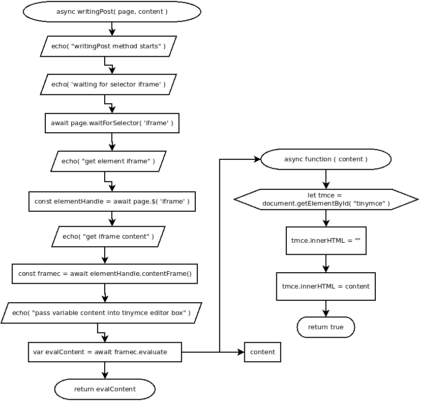

async writingPost( page, content )
Flowchart

Code
async writingPost( page, content ){
// write posting
echo( "writingPost method starts" ); //
echo( 'waiting for selector iframe' ); //
await page.waitForSelector( 'iframe' ); //
echo( "get element iframe" ); //
const elementHandle = await page.$( 'iframe' ); //
echo( "get iframe content" ); //
const framec = await elementHandle.contentFrame(); //
echo( "pass variable content into tinymce editor box" ); //
var evalContent = await framec.evaluate(
async ( content ) => {
let tmce = document.getElementById( "tinymce" );
tmce.innerHTML = "";
tmce.innerHTML = content;
return true;
},
content
);
return evalContent;
}